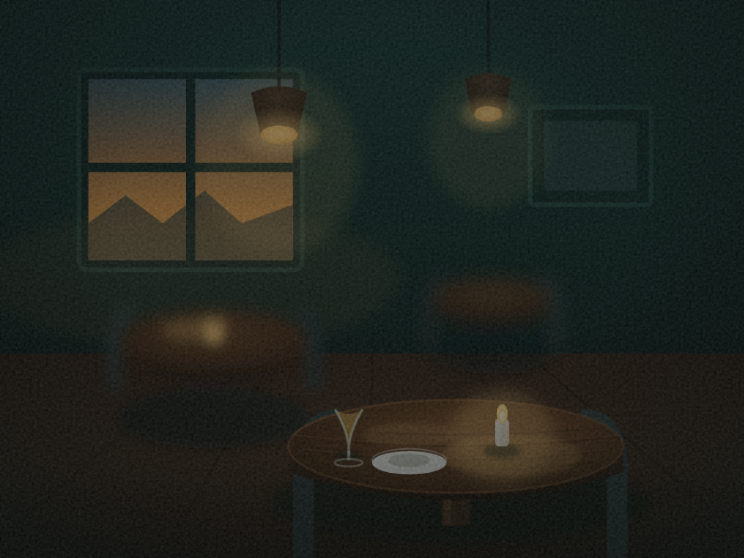
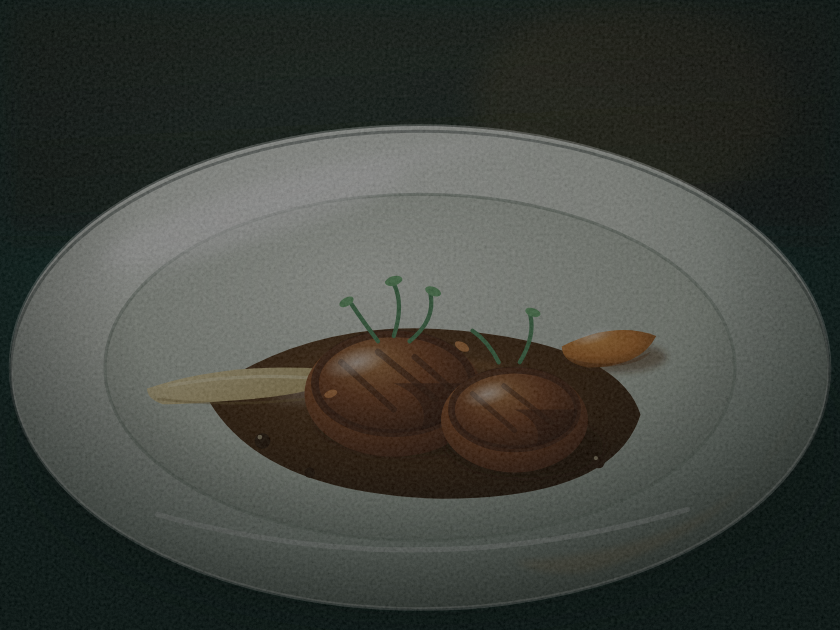
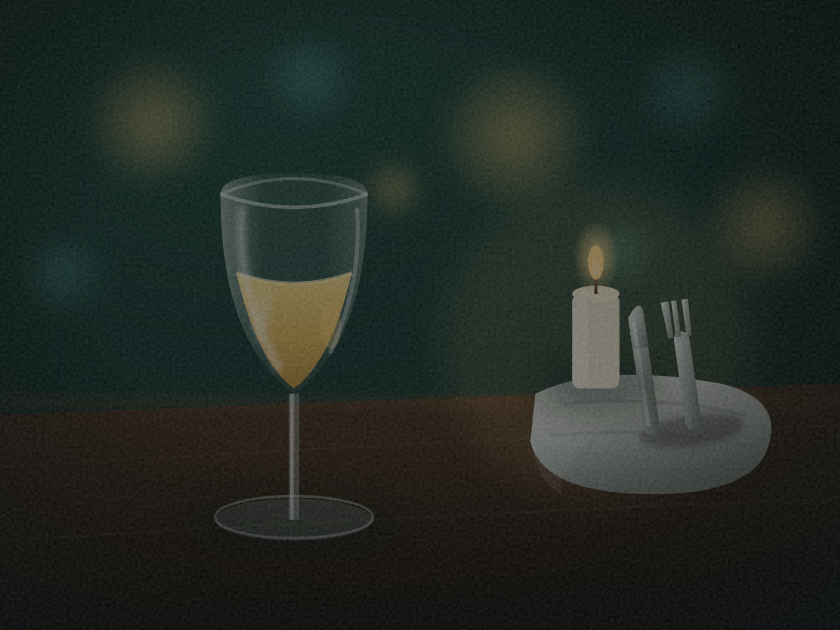
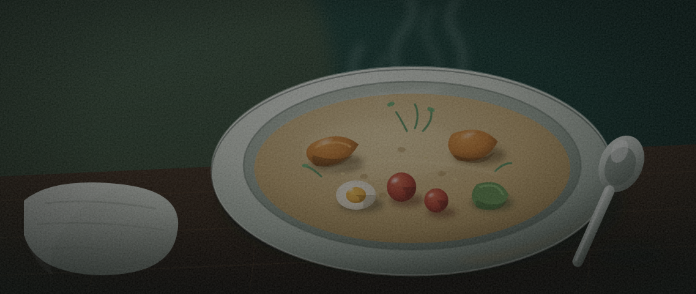

fish · le héros
6,0/10Poisson entier dressé, couverts, table en bois. La plus grande transformation depuis la version géométrique — reconnaissable et dimensionnel, mais le corps trahit encore le vecteur.
Ouvrir le SVG →Laboratoire · expérience
À partir du poisson géométrique de la série v2/r1, une boucle agentique a redessiné cinq scènes du monde « restaurant » — entièrement en SVG, sans image matricielle ni réseau — en visant un rendu réaliste mais teinté par la marque (couleurs naturelles tirées vers le teal sombre du site). Un panel de juges indépendants a noté le réalisme (0–10) à chaque tour.
Le constat : le réalisme a plafonné à 6,0/10. La boucle a fait un bond énorme (le poisson passe de ~3 à 6) mais bute sur un plafond : le SVG dessiné donne de belles illustrations stylisées, pas des photographies. Pour du photoréalisme, il faut une vraie image matricielle (photo client, banque d'images, ou génération). Comme style d'illustration assumé, en revanche, l'ensemble est cohérent et réussi.
Trajectoire réalisme : 5,0 → 5,0 → 6,0 → 5,6 → 5,9 · pic au tour 2 ; les tours suivants, plus chargés, ont été notés plus bas et rejetés par la boucle.
Poisson entier dressé, couverts, table en bois. La plus grande transformation depuis la version géométrique — reconnaissable et dimensionnel, mais le corps trahit encore le vecteur.
Ouvrir le SVG →
Salle au crépuscule : fenêtre, suspensions, table à la bougie. Le plus convaincant — l'atmosphère masque le vecteur.
Ouvrir le SVG →
Médaillons saisis, sauce, micro-pousses, faible profondeur de champ. Volumétrique, mais les formes restent vectorielles.
Ouvrir le SVG →
Verre de vin, bougie, couverts, bokeh chaud. Ambiance juste, cohérente avec la salle.
Ouvrir le SVG →
Bol de cuisine du marché, vapeur, garnitures. Le plus faible : les garnitures flottent un peu, lecture « dessin ».
Ouvrir le SVG →